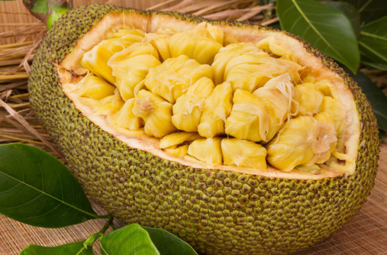

Magpie Robin
National Bird of Bangladesh
The Oriental magpie-robin (Copsychus saularis) is a small passerine bird that was formerly classed as a member of the thrush family Turdidae, but now considered an Old World flycatcher. They are distinctive black and white birds with a long tail that is held upright as they forage on the ground or perch conspicuously. Occurring across most of the Indian subcontinent and parts of Southeast Asia, they are common birds in urban gardens as well as forests. They are particularly well known for their songs and were once popular as cagebirds.
 Magpie Robin
Magpie Robin
Jackfruit
National Fruit of Bangladesh
The jackfruit (Artocarpus heterophyllus), also known as the jack tree,[7] is a species of tree in the fig, mulberry, and breadfruit family (Moraceae).[8] Its origin is in the region between the Western Ghats of southern India.[8] The jackfruit tree is well-suited to tropical lowlands and is widely cultivated throughout tropical regions of the world, including India, Bangladesh, Sri Lanka, and the rainforests of the Philippines, Indonesia, Malaysia, and Australia.[8][9][10][11] It bears the largest fruit of all trees, reaching as much as 55 kg (120 pounds) in weight, 90 cm (35 inches) in length, and 50 cm (20 inches) in diameter.[8][12] A mature jackfruit tree produces some 200 fruits per year, with older trees bearing up to 500 fruits in a year.[8][9] The jackfruit is a multiple fruit composed of hundreds to thousands of individual flowers, and the fleshy petals of the unripe fruit are eaten.[8][13] The ripe fruit is sweet (depending on variety) and is commonly used in desserts. Canned green jackfruit has a mild taste and meat-like texture that lends itself to being called "vegetable meat".[8]

Jackfruit